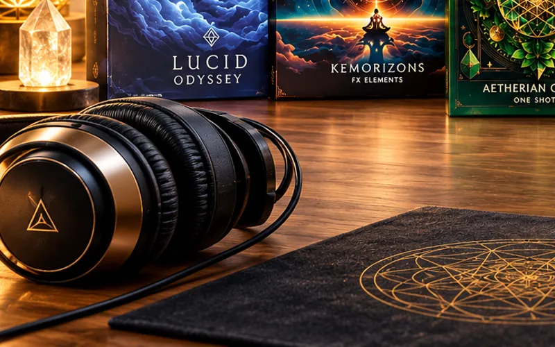

Get access
After checkout the seller emails your download. Save the tracks and the PDF instructions on the device you use most.
The idea behind the sound, the seller's daily directions and practical tips for getting the most from each session.
Instant digital download · checkout through ClickBank · 60-day money-back guarantee from the seller

Every Shifting Vibrations track pairs music with a listening technique. Binaural beats play slightly different tones in each ear. 432 Hz tuning softens the overall pitch. Subliminal layers sit quietly beneath the music. The seller's aim is to help you settle into a relaxed, receptive state, then use it for meditation, visualization or intention-setting.
Researchers have studied some of these ideas. A 2019 meta-analysis on binaural beats found measurable effects in some areas, and government health agencies summarise evidence on music and relaxation techniques. Other ideas, like manifestation and the pineal gland, are spiritual concepts rather than established science. See our Benefits page for that distinction.

After checkout the seller emails your download. Save the tracks and the PDF instructions on the device you use most.
Listen for at least five minutes, in bed, on the couch, on a walk or while cooking. Start with Golden Ratio as the guide advises.
The seller suggests at least 14 days in a row, and the guarantee gives you up to 60 days to see how it fits.
Egyptian Golden Ratio For Abundance and The Abundance Pyramid pair well with a short affirmation or journaling practice. Customers on the seller page mention playing the Egyptian track every morning.
Golden Ratio Experience or Rainy Winter make a five-minute pause between tasks. Close your eyes and breathe slowly.
Stormy Escape and Astral Starwaves are ambient, low-key choices for the hour before bed. See our sleep focus area.
Lucid Oddysee and New Horizons Astral Experience are built for lucid-dream incubation. Pair them with a dream journal. See Meditation & Dreamwork.
Want ideas for building the habit? Read our five-minute routine guide.

You get 6 core tracks, 4 bonus soundscapes and a PDF guide as an instant digital download, all for a one-time $47. The seller backs it with a 60-day money-back guarantee.
Instant digital download · checkout through ClickBank · 60-day money-back guarantee from the seller
The complete audio collection: 6 core tracks, 4 bonus soundscapes and a PDF listening guide.
$300$47
One-time payment · instant download · 60-day money-back guarantee
View Offer →